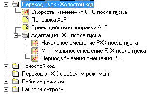
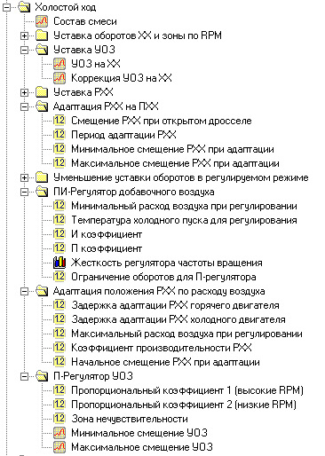

Приветствую друзья!
Продолжим описание калибровок прошивки. Тем более если посмотреть статистику, то эта тема не обрела массовость в рамках моего БЖ, но нашла своего читателя. В прошлой записи мы обсудили режим пуска, вопросов и споров не было выявлено, это говорит что или всем все понятно, или наоборот читателю ни слова не ясно! ;) Напомню, что пуск — это тот режим, когда мотор из состояния сна запускается стартером, схватил и превысил обороты полного выхода из пуска. Все, после превышения этих оборотов, режим пуска полностью закончен и начинается режим перехода.
Режим перехода, как ясно из названия, отвечает за переход к холостому ходу, в этом режиме уже начинают работать датчики, контролирующие количество воздуха — ДМРВ, или определяющие его давление — ДАД.

Режим Переход Пуск — Холостой Ход
Скорость изменения ГТЦ – эта таблица отвечает за скорость уменьшения цикловой подачи топлива, или другими словами отвечает за сглаживание изменения состава смеси после пуска. Она помогает перейти плавно от пусковых режимов к рабочим, когда включатся в работу датчики типа ДМРВ и прочие. Если тачка завелась и сразу заглохла, то часто причина именно в этой калибровке, надо замедлить процесс перехода
Поправка ALF – это обогащение состава смеси во время перехода, многие немного обогащают смесь, но здесь надо смотреть уже на работу мотора, если он не проваливается, то нет смысла лить лишнее топливо.
Время работы поправки ALF – это единица времени, пока калибровка будет работать. Время отсчета начинается с момента включения зажигания.
Адаптация РХХ после пуска
Начальное смещение РХХ после пуска — как ясно из названия, эта таблица отвечает за дополнительное смещение РХХ во время перехода к ХХ. Т.е. помимо желаемого положения РХХ от ТОЖ, к ней во время перехода добавляется количество шагов этой калибровки, опять же для того, чтобы мотор ровно без провалов вошел в режим ХХ
Минимальное смещение РХХ после пуска — это продолжение калибровки, описанной выше. В этой таблице указывается до каких значений РХХ будет смещаться во время перехода. Если там стоит ноль, то эта таблица не участвует в работе, и РХХ будет опускаться до желаемого положения РХХ уже в самом режиме ХХ.
Период убывания смещения РХХ — как понятно из названия, в этой таблице указывается длительность адаптации от начального к минимальному смещению, или другими словами это скорость убывания. Как только адаптивное смещение РХХ достигнет минимума, режим перехода к пуске будет отменен и положение РХХ более не будет рассчитываться по этому алгоритму.
Вот и весь алгоритм перехода, казалось бы что всего то 6 калибровок, что тут сложного, а на деле именно режим перехода, а не пуска, чаще всего портит настроение.
И чтобы запись не была сильно краткой, давайте перейдем к режиму Холостой Ход.

Холостой ход — это режим работы двигателя без нагрузки. В этом режиме ДЗ закрыта полностью, педаль акселератора отпущена, а за поддержку желаемых оборотов отвечают уже все механизмы: РХХ, УОЗ, ДМРВ и прочие коэффициенты, о которых постараюсь внятно рассказать ниже.
Состав смеси — это таблица, в которой указывается какой состав смеси вы хотите чтобы был, он выстраивается от температуры двигателя.
Уставка оборотов ХХ и зоны по РПМ
Желаемые обороты ХХ — это таблица, в которой мы указываем, какие обороты будут у нашего двигателя в зависимости от температуры двигателя. Считается что 80 градусов это полноценно прогретый мотор. И желательно немного приподнять обороты в зоне включения вентилятора, так мы заставляем помпу более интенсивно качать ОЖ и облегчаем участь генератора.
Смещение оборотов ХХ в движении — эта таблица отвечает за режим наката, когда вы катитесь на нейтрали с горы или просто докатываетесь до перекрестка. В общем если у вас есть датчик скорости, и он видит движение, то в этой таблице можно выставить на сколько оборотов поднять ХХ, для компенсации косяков настройки. Как только датчик скорости зафиксирует что машина уже не катится, то обороты станут в таблицу желаемых оборотов ХХ
Коэффициент 2 переходного режима – отвечает за РХХ когда именно он начнет вступать в работу. Обычно он ставится ощутимо больше чем желаемый ХХ, так как РХХ это исполнительный механизм и не в состоянии мгновенно перемещаться. Если словами то РХХ – грубая настройка.
Коэффициент 1 переходного режима – отвечает за то, когда УОЗ включится в работу механизма перехода в ХХ. Ставится немного выше ХХ, так как регулировка УОЗ считается точной регулировкой, и она не в состоянии без РХХ полноценно руководить оборотами двигателя в широких пределах.
Уставка УОЗ
УОЗ на ХХ – это базовый УОЗ на ХХ без учета коррекций. Т.е. если в этой таблице будет к примеру 15 градусов, то с учетом коррекций фактический УОЗ будет прибавляться или убавляться в зависимости от следующей калибровки.
Коррекция УОЗна ХХ – эта таблица отвечает за изменение угла в зависимости от температуры. Если в базовом УОЗ на ХХ будет 15 градусов, то благодаря этой таблице фактический угол будет другой. Но в этой таблице есть один косяк, и отрицательные значения – делают РАНЬШЕ угол, а ПОЛОЖИТЕЛЬНЫЕ наоборот запоздняют угол. Т.е. если в базовом 15 градусов, а в коррекции -3, то фактический угол станет раньше на 3 градуса раньше: 13 градусов
Уставка РХХ
Желаемое положение РХХ – эта таблица строится индивидуально, чтобы мотору было достаточно воздуха для внятной работы во всех режимах ХХ.
Коэффициент уставки РХХ – я не знаю что дает эта таблица )
Адаптация РХХ на ПХХ — это адаптация движения РХХ в режиме принудительного холостого хода
Смещение РХХ при открытом дросселе – эта таблица отвечает за то, когда при нажатии на газ, все шаги будут дополнительно сдвигаться. Другими словами указывается на сколько шагов открыться РХХ чтобы прикрыть канал ХХ, для того чтобы уменьшить перетечки воздуха мимо дросселя
Период адаптации – время за которое адаптируется РХХ в режиме принудительного ХХ
Минимальное смещение при адаптации – ограничение движения количества шагов вниз при адаптации. Чем точнее настроено желаемое положение рхх, тем сильнее можно зажимать границы.
Максимальное смещение при адаптации – ограничение количества шагов вверх при адаптации. Чем точнее настроено желаемое положение рхх, тем сильнее можно зажимать границы.
Уменьшение уставки оборотов в регулируемом режиме
Шаг уменьшения уставки в зоне ХХ1-ХХ2 – скорость движения рхх в диапазоне оборотов от коэффициента переходного режима №2 к коэффициенту переходного режима №1. Другими это скорость шагания РХХ
Шаг уменьшения уставки в зоне ХХ-ХХ1 – скорость движения рхх в диапазоне оборотов от коэффициента переходного режима №1 к таблице желаемого ХХ. Другими это скорость шагания РХХ.
ПИ регулятор добавочного воздуха
Минимальный расход воздуха – это минимальное количество воздуха, ниже которого режим регулировки не будет включаться. Если расход будет ниже величины, то режим регулировки прекращается, т.к. нет смысла регулировать там где не надо.
Температура для холодного пуска регулирования – отвечает за температуру ниже которой будет влияние на пусковой режим. Увеличивает задержку адаптации РХХ и его период для более равномерной подачи воздуха во время работы холодного двигателя. Так же запрещается работа П-регулятора пока обороты не достигнут желаемых по таблице "желаемые обороты ХХ"
Интегральный коэффициент – в теории он является вспомогательным. Если пропорциональный не успел срегулировать или промазал, то И коэффициент дорегулирует его в режиме ХХ. И коэффициент является временным. Что-то типа надзирателя над П-коэффициентом. Он задает скорость движения.
Пропорциональный коэффициент – это основной коэффициент вычисляет куда ему рхх двигать, по идее он должен вместе с оборотами двигаться, растут обороты – растут шаги, падают обороты – падают шаги.
Жесткость регулятора частоты вращения – хитрая чаша которая помогает ускорять рхх для адекватного подхвата хх. Если стоит 1, то режим ХХ падает на уставки И и П коэффициентов.
Ограничение оборотов П-регулятора – это пределы оборотов в которых он будет работать. Именно в этом диапазоне работает П коэффициент.
Адаптация положения РХХ по расходу воздуха — адаптация работы РХХ уже при работе ДМРВ
Задержка адаптации РХХ горячего двигателя – после старта мотора, когда он резко подкинул обороты и через какое время мы разрешаем ему опускать обороты вниз. Эта калибровка связана с "температурой холодного пуска"
Задержка адаптации РХХ холодного двигателя – на холодную делается больше, так как чтобы когда мотор подкинул обороты, должен повисеть немного чтобы устаканиться, так как холодный пуск мотора всегда осложнен. Эта калибровка связана с "температурой холодного пуска"
Максимальный расход воздуха при регулировании – максимальное количество воздуха, в пределах которого будет происходить регулировка. Если расход будет выше, то мозг поймет что это уже не режим ХХ и прекратит регулировку.
Коэффициент производительности – это производительность РХХ, если двигать калибровку сдвигать, то и шаги будут меняться. В теории этой калибровкой надо добиться так, чтобы на прогретом моторе при ХХ было 30-35 шагов. Можно так же добиться этого эффекта не трогая эту калибровку, путем закручивания или откручивания ограничительного винта на самой ДЗ
Начальное смещение – я не знаю что дает эта калибровка ;(
П-регулятор УОЗ
Пропорциональный коэффициент 1 – это то, с какой скоростью УОЗ будет подкидывать обороты вверх!
Пропорциональный коэффициент 2 — это то, с какой скоростью УОЗ будет скидывать обороты вниз!
Зона нечувствительности – это порог, ниже которого УОЗ не будет вступать в регулирование, если выше – то уоз начнет двигаться чтобы выровнять раскачку оборотов. Большой диапазон нет смысла ставить, так как УОЗ регулирование это точное регулирование, и работает в узком диапазоне
Минимальное/максимальное смещение уоз – эта таблица отвечает за пределы, в которых разрешаете двигаться углу. Эта таблица непосредственно отталкивается от таблица "УОЗ на ХХ". Другими словами, в этой таблице мы выставляем пределы УОЗ в рамках которых он будет в состоянии регулировать работу ХХ.
Вот и весь режим холостого хода. Настройка ХХ занятие непростое и требует определенных теоретических знаний, терпения и бензина в баке. Опытный настройщик (не я), даже на самых злых валах с рваным ХХ, сможет этот режим настроить в течении 10-15 минут.
Как всегда большое спасибо за прочтение, если есть заметки или дополнения — пишите. А я поблагодарю снова за информацию интернет, форумы injonl.ru и ecusystems.ru, наш драйвовчанин zx896 в своих видео очень подробно разжевал ВСЕ калибровки прошивки SPT, которая очень похожа с нашей TRS.
Всех благ!